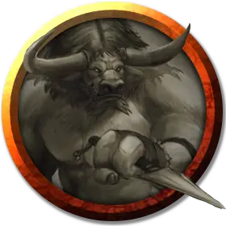

Минотавр лазутчик
Minotaur Infiltrator
Средний Гуманоид, хаотично-злой

Класс Доспеха 13 (природный доспех)
Хиты 36 (8к4 + 16)
Скорость 40 футов
| мод | спас | ||
|---|---|---|---|
| СИЛ | 18 | +4 | +4 |
| ЛОВ | 11 | +0 | +0 |
| ТЕЛ | 14 | +2 | +2 |
| мод | спас | ||
|---|---|---|---|
| ИНТ | 8 | −1 | −1 |
| МДР | 16 | +3 | +3 |
| ХАР | 10 | +0 | +0 |
Навыки Восприятие +7, Обман +2, Религия +1
Чувства тёмное зрение 60 футов, пассивное Восприятие 17
Языки Общий, Бездны
Опасность 2 (450 опыта)
Бонус мастерства +2
Особенности
Запоминание лабиринта. Минотавр может с лёгкостью вспомнить любой пройдённый путь.
Действия
Бодание. . Рукопашная атака оружием: +6 к попаданию, досягаемость 5 футов, одна цель. Попадание: 8 (1к8 + 4) колющего урона или 13 (2к8 + 4) колющего урона если увеличен. Если минотавр переместится как минимум на 10 футов по прямой к существу, а затем в том же ходу попадет по нему атакой, эта цель дополнительно получает 4 (1к8) колющего урона или 9 (2к8) колющего урона если увеличен. Если целью является существо, оно должно преуспеть в спасброске Силы Сл 14, иначе оттолкнётся от минотавра на 10 футов и упадёт ничком.
Кирка. . Рукопашная атака оружием: +6 к попаданию, досягаемость 10 футов, одна цель. Попадание: 10 (1к12 + 4) дробящего урона или 17 (2к12 + 4) дробящего урона если увеличен. Если целью является существо и минотавр увеличен, цель должна преуспеть в спасброске Силы Сл 14, иначе упадёт ничком.
Увеличение (перезаряжается после короткого или продолжительного отдыха). На 1 минуту минотавр магическим образом увеличивается в размере вместе со всем, что несёт и носит. Пока минотавр увеличен, он является Большого размера, удваивает кости урона от атак оружием, основанных на Силе (уже учтено в атаке) и совершает с преимуществом проверки и спасброски Силы. Если минотавру не хватает места, чтобы стать Большим, размер минотавра не изменяется.
Бонусные действия
Безошибочный следопыт. Минотавр магическим образом создаёт психическую связь с одним существом, которое он видит. На следующий час минотавр в точности определяет текущее местоположение своей цели и расстояние до неё, если цель находится на том же плане существования. Связь обрывается, если минотавр становится недееспособен или если минотавр применяет эту способность на другую цель.